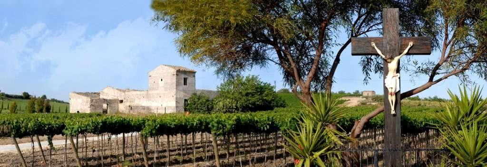
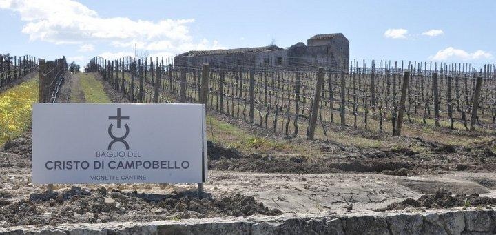
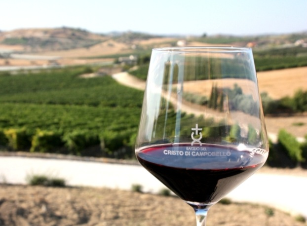
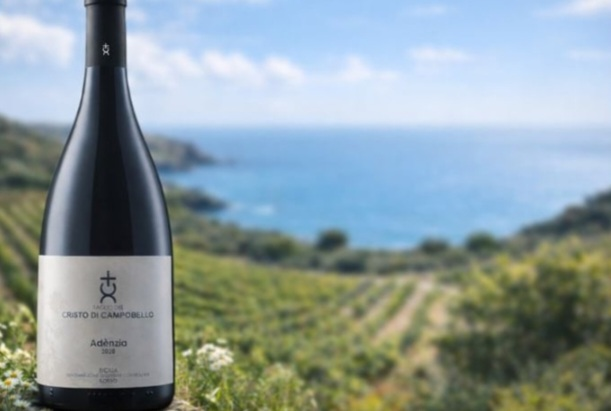

Il Baglio del Cristo di Campobello — noto anche con la sigla C'D'C' — sorge a Campobello di Licata, in provincia di Agrigento. È una realtà che ha portato il nome del paese nell'olimpo del vino siciliano, fondendo passione, dedizione e un profondo legame con il territorio.

Vini che raccontano la Sicilia
Dalle vigne nascono etichette diventate dei riferimenti: il Nero d'Avola "Lu Patri" — premiato come miglior Nero d'Avola dell'anno a DoctorWine 2026 — il Grillo "Lalùci", fresco e mediterraneo, il bianco C'D'C', il Rosato e i grandi rossi come Adènzia. Vini che intrecciano le diverse culture che hanno reso unica questa terra.


"Le cose più belle non hanno fretta"
È la filosofia della cantina: un lavoro fatto di tempo, attesa e rispetto della natura. Il vino diventa così un'esperienza di qualità da condividere con consapevolezza, espressione autentica del paesaggio agrigentino e della sua luce.

A pochi passi da casa
Soggiornando a La Valle Incantata hai una delle cantine più celebrate dell'isola a due passi: l'occasione perfetta per una visita con degustazione tra i vigneti e per scoprire i vini che hanno reso famoso il nome di Campobello di Licata.
Sito ufficiale: cristodicampobello.it →
Soggiorna nella terra del vino
La Valle Incantata è la base ideale per scoprire le cantine e i sapori dell'agrigentino: giardino privato, fino a 8 ospiti, nel cuore di Campobello di Licata.